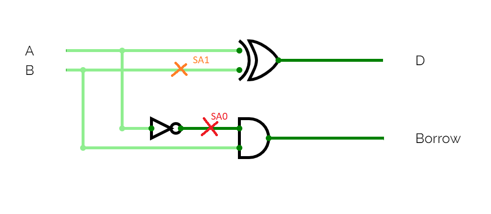

A stuck-at fault (SAF) is a logic-level fault that mimics a manufacturing defect on a digital device, circuits. An Stuck at fault is of two types stuck-at-0 (SA0) and stuck-at-1 (SA1) fault. A wire or an input in a circuit is said to Stuck-at-1 or stuck-at-0 if the input bit (signal) is converted to logic-1 or logic-0 irrespective of its previous value.
1. Example of HS with SA0 fault
| A | B | D | Bout |
|---|---|---|---|
| 0 | 0 | 0 | 0 |
| 0 | 1 | 1 | 1 |
| 1 | 0 | 0 | 0 |
| 1 | 1 | 1 | 0 |
D = 0 ⊕ B = B
Bout = A B
Example of Half subtractor with SA0 and SA1 fault
| A | B | D | Bout |
|---|---|---|---|
| 0 | 0 | 0 | 0 |
| 0 | 1 | 1 | 0 |
| 1 | 0 | 0 | 0 |
| 1 | 1 | 1 | 0 |
D = A ⊕ 1 = A
Bout = 0
It is very difficult to manually show all the possible combinations of faults and the behaviour. So we make use of Hardware description language like Verilog, to simulate all possible combinations of faults.
module hsa(
input a,
input b,
output d,
output borrow
);
assign d = a ^ b;
assign borrow = (!a) && b;
endmodule
module hsa(
input a,
input b,
output d,
output borrow
);
// input of xor gate is SA0
assign d = 0 ^ b;
assign borrow = (!a) && b;
endmodule